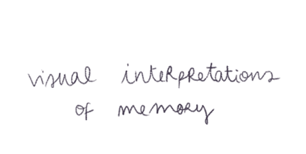
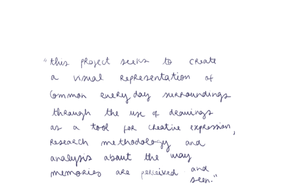

Do we remember things the same way? How different can memories be about the same things? Visual Interpretations of Memory is a research and experiment led project that consists in investigating the visual outcome of memorable experiences. Along with secondary research based on arts, philosophy and psychology practice fields, this project seeks to create a visual representation of common everyday surroundings through the use of drawing exercises as a tool for creative expression, research methodology and analysis about the way memories are perceived and seen.
This project will start by looking into what has already been established about the project’s main issues - memory, perception and how these are represented.
From an artistic perspective, works from artists Lourdes Castro, William Anastasi, Ricardo Passaporte and others, can be used as study cases on the topic of memory. By compiling amongst their artwork a multitude of approaches and outcomes, these artists use memorable experiences to document fleeting moments and mundane objects/routines that are ultimately tied to depicting perceptions. In his work (Subway Drawing series, 1975-1999), Anastasi takes a reflexive response to regular activities such as walking and taking the train. Using drawing as a technique to register his environment, he lets the movement of the train guide his hand while drawing and uses the lines formed by a folded piece of paper to document the nature of unpredictable gestures. However, Lourdes Castro’s daily surroundings are captured through contouring shadow shapes of objects and events (Projected Shadows of Lourdes Castro and Rene Bertholo, 1964) and Passaporte’s illustrations use supermarket brands and logos to portray a type of daily consumerist lifestyle. Even though these artworks appear to be naturally entirely different from each other (in means of their representational mode and outcome,) they are all representing a specific routine that is virtually shared with millions of other individuals.
So how can these memorable experiences be so particular?
The next stage is dedicated to clarifying why memorable experiences can be so distinctive and unique. To do this, research about phenomenology (Husserl) and imagination will be essential to understand how these concepts interfere and correlate with the creation of memories. An introduction to the psychology of looking, Drawing Distinctions the Variety of Graphic Expressions (Manyard P., 2005) and Betty Edwards drawing instruction book (Drawing on the Right Side of the Brain, 1990) will also be made to establish the importance between drawing and memory.
Having set a secondary research base, the final stage is the development of the practical part of the project: a series of workshops involving a drawing exercise. The purpose of the exercise is to make the participants create a memory from the same common experiences through drawing.
The methodology behind the workshop consists of developing a simple website with a page of instructions and rules that apply to making the drawings. The instructed scenarios will include daily activities or common experiences virtually shared by all the participants. These can be i.e.: cooking a meal, taking the train/any transport, listening to a specific song, going to a cafe (…)
Considering the quality of the drawing exercise - the question that remains is how different can memories from people who share the same experiences be?
All Rights Reserved © 2020 Margarida Gonçalves P. Silva.